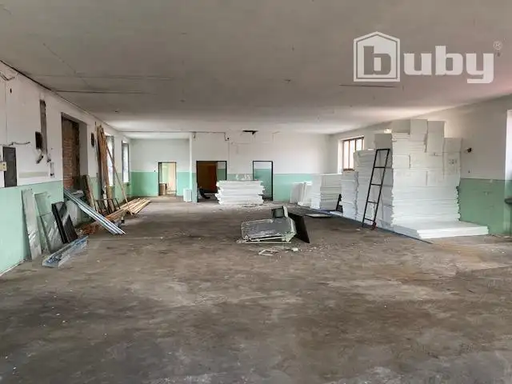
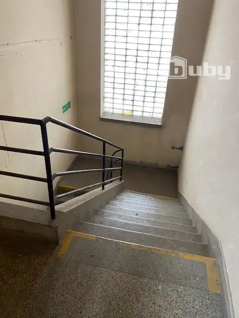
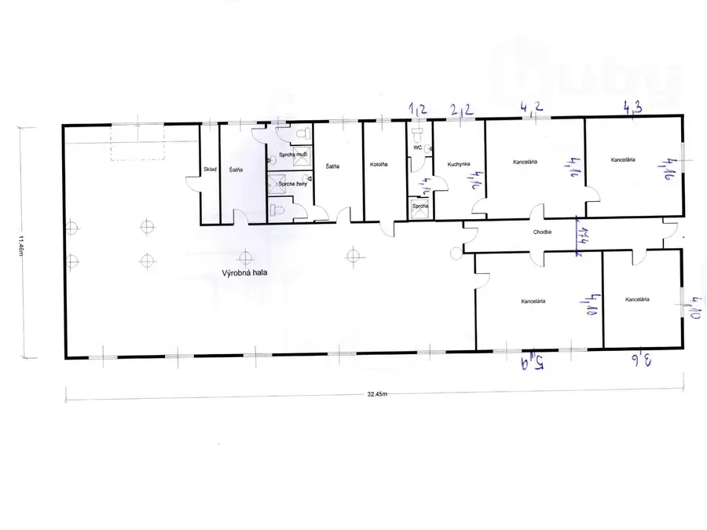
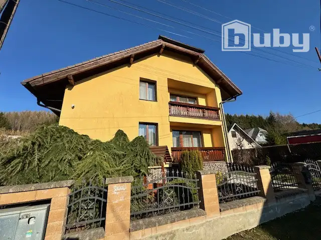
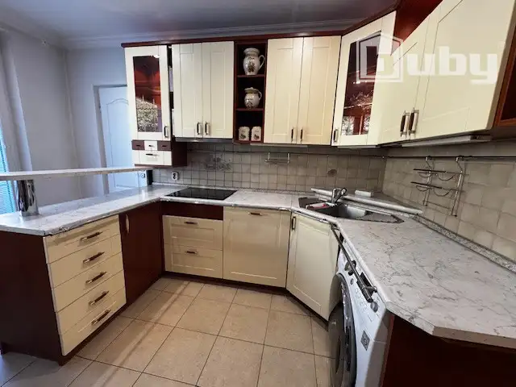

Prenájom · Komerčné priestory
Prenájom výrobno - skladovacích priestorov 324 m2, Rajec
Rajec
Cena na vyžádání


- Plocha324 m²
- StavČiastočná rekonštrukcia
- VlastníctvoOsobné
O nehnuteľnosti
Ponúkame Vám na prenájom komerčné (výrobné a skladové) priestory v polyfunkčnom dvojpodlažnom objekte v Rajci. Priestory o podlahovej výmere 324 m2 s dobrou dopravnou dostupnosťou, nachádzajú sa na 1. poschodí skeletovej budovy, s technickým nákladným výťahom. Možnosť úpravy priestoru podľa požiadaviek nájomcu. Možnosť prenajať k priestorom aj sociálne zázemie a kancelárske priestory.Výhody: dobrý prístup pre dopravu, objekt je strážený, v okolí komplexná občianska vybavenosť, 24 hodinový prístup. Energie - samostatné meranie.Cena: 5,- €/m2/mesiacAk Vás táto ponuka zaujala kontaktujte ma tel. č.: 0903 502 341 alebo email: nemeth.i@bubyreality.sk
Parametre
- Druh
- Skladový objekt
- Dátum zverejnenia
- 21. 04. 2026
- Stav nehnuteľnosti
- Čiastočná rekonštrukcia
- Telekomunikácie
- Internet
- Typ
- Prenájom
- Vlastníctvo
- Osobné
- Zastavaná plocha
- 324 m²
- Úžitková plocha
- 324 m²
Kde to je


Ďalšie ponuky
Celá ponukaMohlo by Vás zaujímať

Komerčné priestoryNové 1 500 €Skladovacie priestory 300 m2, prenájom, Vrútky Vrútky 300 m²
DomNové 320 000 €Nový rodinný dom 250 m2, pozemok 879m2, predaj, Kunerad Kunerad 300 m²
BytNové 259 000 €Predaj - 3 izbový byt 84 m2, Hliny V, Žilina Žilina 3-izbový84 m²2. podlažie